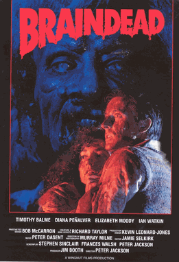
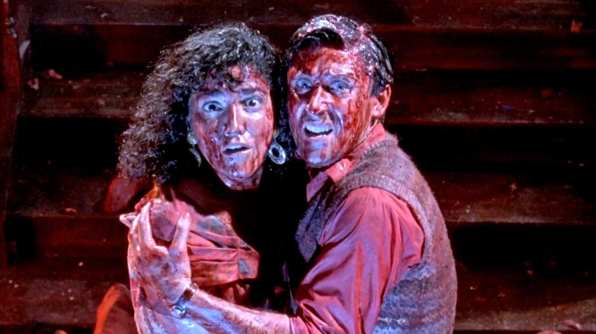
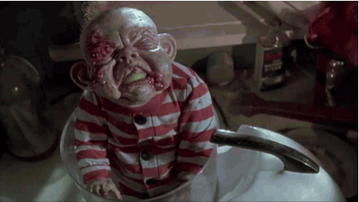
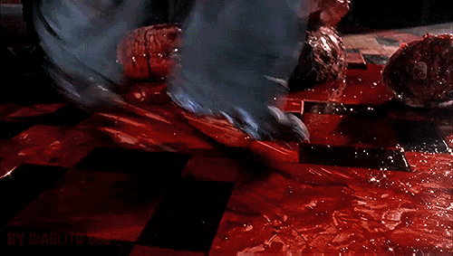

Horror is such a hard genere to pick a favorite movie. First there's subgenres like psycological horror, thriller, haunted, and then god awful horror movies that are fun to watch

Braindead is one of Peter Jackson's breakout films. It completely bombed at the box office and wasted a lot of money. However, it's a cult classic because Jackson would later move on to direct The Lord of the Rings and The Hobbit so all of his fans looked into his original work and found this absolute gem. It's a horror comedy about zombies and romance, and it's so cheesy and hilarious. There's a zombie baby that attacks people. The movie is full of gore that was honestly really well done for the 90s. This movie's plot wasn't great, but its execution was phenomenal. On a more serious note, the use of practical effects is what makes this movie so good.


